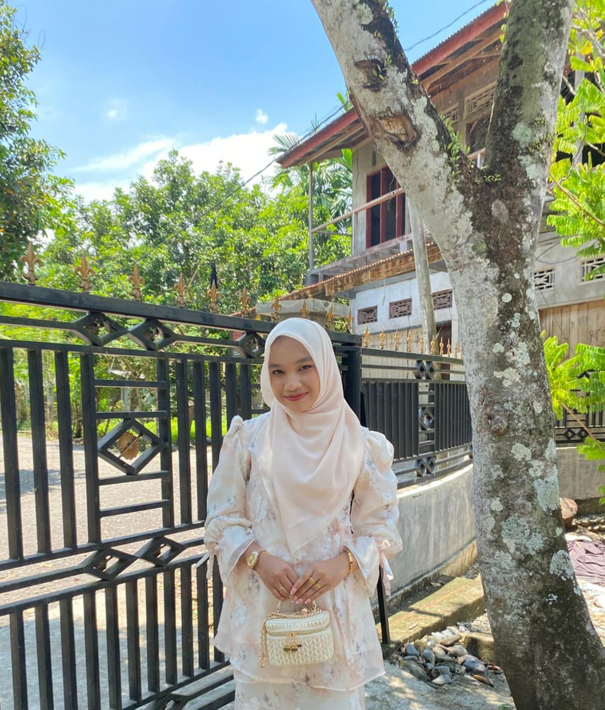

01
Profil
Mengenal lebih dekat tentang saya

Zira Zahira
Mahasiswa Teknik Informatika
Halo, saya Zira Zahira. Saya merupakan mahasiswa Teknik Informatika semester 5 di Universitas Jabal Ghafur yang memiliki ketertarikan terhadap dunia teknologi, desain, dan pengembangan website.
Saya senang mempelajari hal-hal baru, mengembangkan kemampuan dalam bidang teknologi, serta membuat berbagai karya digital yang kreatif dan bermanfaat.
Nama
Zira Zahira
Usia
20 Tahun
Domisili
Mila,Pidie, Aceh
Status
Mahasiswa